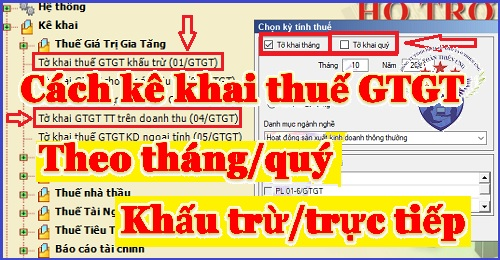

Hướng dẫn kê khai thuế GTGT theo quý, hàng tháng; Cách kê khai thuế GTGT theo phương pháp Khấu trừ hoặc Trực tiếp; Đối tượng kê khai thuế GTGT theo quý, tháng; Cách xác định kê khai thuế GTGT theo phương pháp khấu trừ, trực tiếp.
Cần chú ý:
+ DN mình thuộc đối tượng kê khai thuế GTGT theo phương pháp khấu trừ hay trực tiếp
+ DN mình thuộc đối tượng kê khai thuế GTGT theo tháng hay theo quý.
-> Mỗi phương pháp kê khai sẽ áp dụng Mẫu tờ khai thuế GTGT khác nhau, cách tính thuế GTGT phải nộp sẽ khác nhau -> cụ thể như sau:
------------------------------------------------------------------------------------------
I. Cách xác định kê khai thuế GTGT theo Quý hay tháng:
Căn cứ theo Điều 8 Nghị định 126/2020/NĐ-CP quy định:
1. Các loại thuế thuộc loại khai theo tháng, bao gồm:
a) Thuế giá trị gia tăng, thuế thu nhập cá nhân.
- Trường hợp người nộp thuế đáp ứng các tiêu chí theo quy định tại Điều 9 Nghị định này thì được lựa chọn khai theo quý.
Như vậy: Thuế giá trị gia tăng là loại thuế kê khai theo tháng
-> Nhưng nếu DN đáp ứng các điều kiện, các tiêu chí theo quy định dưới đây thì được lựa chọn khai theo quý.
Căn cứ theo Điều 9 Nghị định 126/2020/NĐ-CP quy định Tiêu chí kê khai thuế GTGT theo quý:
a, Đối với Doanh nghiệp đang hoạt động:
- Những Doanh nghiệp thuộc diện khai thuế GTGT theo tháng nếu có tổng doanh thu bán hàng hoá và cung cấp dịch vụ của năm trước liền kề từ 50 tỷ đồng trở xuống: => Thì được khai thuế GTGT theo quý.
+) Doanh thu bán hàng hóa, cung cấp dịch vụ được xác định là tổng doanh thu trên các tờ khai thuế GTGT của các kỳ tính thuế trong năm dương lịch.
+) Nếu Doanh nghiệp thực hiện khai thuế tập trung tại trụ sở chính cho đơn vị phụ thuộc, địa điểm kinh doanh thì doanh thu bán hàng hóa, cung cấp dịch vụ bao gồm cả doanh thu của đơn vị phụ thuộc, địa điểm kinh doanh.
b, Đối với Doanh nghiệp mới thành lập:
- DN mới bắt đầu hoạt động, kinh doanh => Thì được lựa chọn kê khai thuế GTGT theo quý.
=> Sau khi sản xuất kinh doanh đủ 12 tháng thì từ năm dương lịch liền kề tiếp theo năm đã đủ 12 tháng sẽ căn cứ theo mức doanh thu của năm dương lịch trước liền kề (đủ 12 tháng) để thực hiện khai thuế GTGT theo tháng hoặc quý.
Ví dụ 1:
- Kế toán Diệu Tâm bắt đầu hoạt sản xuất kinh doanh từ tháng 01/2025 thì năm 2025 được lựa chọn kê khai thuế GTGT theo quý.
-> Căn cứ vào doanh thu của năm 2025 (đủ 12 tháng của năm dương lịch) để xác định năm 2026 thực hiện khai thuế tháng hay khai quý.
Ví dụ 2:
- Cty B bắt đầu hoạt động sản xuất kinh doanh từ tháng 3/2025 thì năm 2025, 2026 Cty B được lựa chọn kê khai thuế GTGT theo quý.
-> Vì năm 2025 chỉ hoạt động 10 tháng - Tức là không đủ 12 tháng để làm căn cứ xác định -> Nên Cty B căn cứ vào doanh thu của năm 2026 (đủ 12 tháng) để xác định năm 2027 thực hiện khai thuế theo tháng hay theo quý.
- Doanh nghiệp có trách nhiệm tự xác định thuộc đối tượng khai thuế theo quý để thực hiện khai thuế theo quy định.
+) DN đáp ứng tiêu chí khai thuế theo quý => Thì được lựa chọn khai thuế theo tháng hoặc quý, ổn định trọn năm dương lịch.
+) Trường hợp người nộp thuế đang thực hiện khai thuế theo tháng nếu đủ điều kiện khai thuế theo quý và lựa chọn chuyển sang khai thuế theo quý thì gửi văn bản đề nghị quy định tại Phụ lục I ban hành kèm theo Nghị định 126/2020/NĐ-CP đến cơ quan thuế quản lý trực tiếp, chậm nhất là ngày 31/01 của năm bắt đầu khai thuế theo quý. Nếu sau thời hạn này không gửi văn bản đến cơ quan thuế thì tiếp tục thực hiện khai thuế theo tháng ổn định trọn năm dương lịch.
+) Nếu DN tự phát hiện không đủ điều kiện khai thuế theo quý thì phải thực hiện khai thuế theo tháng kể từ tháng đầu của quý tiếp theo. DN không phải nộp lại hồ sơ khai thuế theo tháng của các quý trước đó nhưng phải nộp Bản xác định số tiền thuế phải nộp theo tháng tăng thêm so với số đã kê khai theo quý quy định tại Phụ lục I ban hành kèm theo Nghị định Nghị định 126/2020/NĐ-CP và phải tính tiền chậm nộp theo quy định.
+) Trường hợp cơ quan thuế phát hiện DN không đủ điều kiện khai thuế theo quý thì cơ quan thuế phải xác định lại số tiền thuế phải nộp theo tháng tăng thêm so với số đã kê khai và phải tính tiền chậm nộp. DN phải thực hiện khai thuế theo tháng kể từ thời điểm nhận được văn bản của cơ quan thuế.
-------------------------------------------------------------------------------------------------------
II. Cách xác định kê khai thuế GTGT khấu trừ hay Trực tiếp:
1. Đối tượng kê khai thuế GTGT theo phương pháp khấu trừ:
Theo điều 12 Thông tư 219/2013/TT-BTC quy định phương pháp Khấu trừ thuế GTGT:
Phương pháp khấu trừ thuế áp dụng đối với DN thực hiện đầy đủ chế độ kế toán, hóa đơn, chứng từ theo quy định của pháp luật về kế toán, hóa đơn, chứng từ bao gồm:
a) DN đang hoạt động có doanh thu hàng năm từ bán hàng hóa, cung ứng dịch vụ từ 1 tỷ đồng trở lên (trừ hộ, cá nhân kinh doanh nộp thuế theo phương pháp tính trực tiếp).
b) Cơ sở kinh doanh đăng ký tự nguyện áp dụng phương pháp khấu trừ thuế (trừ hộ, cá nhân kinh doanh nộp thuế theo phương pháp tính trực tiếp).
Như vậy: Có 2 đối tượng được kê khai thuế GTGT theo pp Khấu trừ đó là: DN có Doanh thu hàng năm từ 1 tỷ trở lên và DN đăng ký tự nguyện, cụ thể như sau:
a) Doanh thu hàng năm từ 1 tỷ đồng trở lên làm căn cứ xác định kê khai thuế GTGT theo phương pháp khấu trừ là doanh thu bán hàng hóa, cung ứng dịch vụ chịu thuế GTGT và được xác định như sau:
Doanh thu hàng năm do DN tự xác định căn cứ vào tổng cộng chỉ tiêu “Tổng doanh thu của HHDV bán ra chịu thuế GTGT” trên:
- Thời gian áp dụng ổn định phương pháp tính thuế là 2 năm liên tục.
Ví dụ: Doanh nghiệp A được thành lập từ năm 2013 và đang hoạt động trong năm 2025. Để xác định phương pháp tính thuế GTGT cho năm 2026 và năm 2027, doanh nghiệp A xác định mức doanh thu như sau:
- Cộng chỉ tiêu “Tổng doanh thu của HHDV bán ra chịu thuế GTGT” trên Tờ khai thuế GTGT hàng tháng trong 12 tháng (từ kỳ tính thuế tháng 11/2024 đến hết kỳ tính thuế tháng 10/2025).
- Trường hợp tổng doanh thu theo cách xác định trên từ 1 tỷ đồng trở lên, doanh nghiệp A áp dụng phương pháp khấu trừ thuế trong 2 năm (năm 2026 và năm 2027).
- Trường hợp tổng doanh thu theo cách xác định trên chưa đến 1 tỷ đồng, doanh nghiệp A chuyển sang áp dụng phương pháp tính trực tiếp trong 2 năm (năm 2026 và năm 2027), trừ trường hợp doanh nghiệp A đăng ký tự nguyện áp dụng phương pháp khấu trừ thuế quy định.
- Những Doanh nghiệp mới thành lập chưa xác định được Doanh thu hoặc những DN đang hoạt động nhưng có Doanh thu chưa đến 1 tỷ đồng -> Thì đăng ký phương pháp kê khai thuế GTGT như sau:
Theo điều 1 Thông tư 93/2017/TT-BTC và Công văn 4253/TCT-CS quy định:
"Phương pháp tính thuế của cơ sở kinh doanh xác định theo Hồ sơ khai thuế giá trị gia tăng hướng dẫn tại Điều 11 Thông tư số 156/2013/TT-BTC ngày 06/11/2013 của Bộ Tài chính (đã được sửa đổi, bổ sung tại Điều 1 Thông tư số 119/2014/TT-BTC ngày 25/8/2014 và Điều 2 Thông tư số 26/2015/TT-BTC ngày 27/2/2015 của Bộ Tài chính)."
- Nếu Doanh nghiệp đăng ký áp dụng thuế GTGT theo phương pháp khấu trừ thì gửi Tờ khai thuế GTGT Mẫu số 01/GTGT, 02/GTGT đến cơ quan thuế.
- Nếu Doanh nghiệp đăng ký áp dụng phương pháp trực tiếp thì gửi Tờ khai thuế GTGT Mẫu số 03/GTGT, 04/GTGT đến cơ quan thuế.
Thời hạn nộp hồ sơ là Thời hạn nộp Tờ khai thuế GTGT kỳ đầu tiên năm thành lập hoặc đầu năm dương lịch.
Ví dụ: Công ty tư vấn Minh Phúc thành lập ngày 29/01/2025. Công ty lựa chọn kê khai thuế GTGT theo phương pháp khấu trừ và lựa chọn kê khai theo theo Qúy
-> Thì Công ty phải nộp Tờ khai thuế GTGT mẫu 01/GTGT quý 1/2025 (quý đầu tiên) chậm nhất ngày 05/05/2025.
|
Căn cứ các quy định trên, Cục Thuế TP Hà Nội hướng dẫn nguyên tắc như sau: - Trường hợp Công ty của Độc giả (sau đây gọi tắt là Công ty) mới thành lập vào tháng 3 năm 2019 và đã gửi tờ khai mẫu 01/GTGT tới cơ quan thuế quản lý theo quy định và đã được cơ quan thuế Thông báo chấp thuận nội dung đăng ký thì Công ty áp dụng tính thuế GTGT theo phương pháp khấu trừ cho năm 2019. -> Đến hết năm 2019 (năm dương lịch đầu tiên từ khi thành lập), Công ty thực hiện xác định lại tổng doanh thu của hàng hóa, dịch vụ bán ra chịu thuế GTGT năm 2019 theo hướng dẫn tại Khoản 2 Điều 12 Thông tư số 219/2013/TT-BTC: +) Trường hợp doanh thu theo cách xác định nêu trên từ 1 tỷ đồng trở lên thì Công ty tiếp tục áp dụng phương pháp khấu trừ thuế ổn định trong 02 năm tiếp theo (năm 2020, 2021). +) Trường hợp doanh thu theo cách xác định nêu trên dưới 1 tỷ đồng và không tiếp tục đăng ký tự nguyện áp dụng phương pháp khấu trừ thuế thì Công ty gửi tờ khai mẫu 04/GTGT đăng ký áp dụng phương pháp trực tiếp đến cơ quan thuế quản lý. - Trường hợp Công ty của Độc giả đã gửi tờ khai mẫu 01/GTGT sau đó nộp lại tờ khai mẫu 04/GTGT để đăng ký áp dụng phương pháp trực tiếp thì đề nghị Độc giả cung cấp các hồ sơ liên quan đến cơ quan thuế quản lý trực tiếp của Công ty Độc giả để được giải đáp cụ thể. |
--------------------------------------------------------------------------------------------
c) Hồ sơ khai thuế GTGT theo phương pháp khấu trừ:
- Tờ khai thuế giá trị gia tăng mẫu 01/GTGT theo thông tư 80/2021/TT-BTC
-----------------------------------------------------------------------------------------------------
2. Cách kê khai thuế GTGT theo phương pháp trực tiếp:
a. Kê khai thuế theo phương pháp trực tiếp trên GTGT
+) Đối tượng áp dụng:
- DN hoạt động mua, bán, chế tác vàng bạc, đá quý.
+) Hồ sơ khai thuế GTGT theo phương pháp trực tiếp trên GTGT:
- Tờ khai thuế giá trị gia tăng theo mẫu số 03/GTGT.
b. Kê khai thuế GTGT theo phương pháp trực tiếp trên doanh thu:
+) Đối tượng áp dụng:
- Những DN có doanh thu hàng năm dưới mức ngưỡng doanh thu 1 tỷ đồng (trừ trường hợp đăng ký tự nguyện áp dụng phương pháp khấu trừ thuế).
- Doanh nghiệp, hợp tác xã mới thành lập (trừ trường hợp đăng ký tự nguyện áp dụng pp khấu trừ).
- Hộ, cá nhân kinh doanh;
- Tổ chức kinh tế khác không phải là doanh nghiệp, hợp tác xã (trừ trường hợp đăng ký nộp thuế theo phương pháp khấu trừ).
+) Hồ sơ khai thuế GTGT theo phương pháp trực tiếp trên doanh thu:
- Tờ khai thuế giá trị gia tăng mẫu số 04/GTGT theo thông tư 80/2021/TT-BTC
--------------------------------------------------------------------------
Căn cứ theo Điều 44 Luật quản lý thuế 38/2019/QH14 quy định:
1) Hạn nộp tờ khai thuế GTGT theo tháng:
Chậm nhất là ngày thứ 20 của tháng tiếp theo tháng phát sinh nghĩa vụ thuế đối với trường hợp khai và nộp theo tháng;
Ví dụ: Hạn nộp Tờ khai thuế GTGT tháng 1/2025 là ngày 20/2/2025
2) Hạn nộp tờ khai thuế GTGT theo quý:
Chậm nhất là ngày cuối cùng của tháng đầu của quý tiếp theo quý phát sinh nghĩa vụ thuế đối với trường hợp khai và nộp theo quý.
Ví dụ: Hạn nộp Tờ khai thuế GTGT Qúy 1/2025 là ngày 30/04/2025, nhưng do ngày 30/04 là ngày nghỉ nên được chuyển sang ngày làm việc tiếp theo
Trường hợp thời hạn nộp hồ sơ khai thuế, thời hạn nộp thuế trùng với ngày nghỉ theo quy định thì thời hạn nộp hồ sơ khai thuế, thời hạn nộp thuế được tính là ngày làm việc tiếp theo của ngày nghỉ đó
Nếu bạn muốn học làm kế toán thuế thực tế, kê khai thuế tháng/quý, xác định thuế GTGT khấu trừ - không được khấu trừ, lập tờ khai báo cáo quyết toán thuế cuối năm... thực hành trên chứng từ thực tế.
hãy tham gia: Lớp học kế toán thuế thực tế chuyên sâu.
